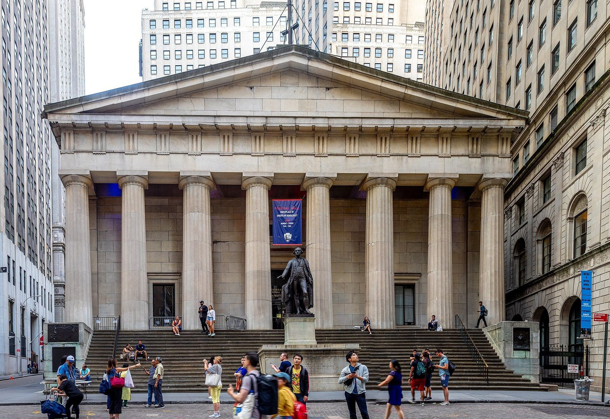

Perché conta: il ritorno di Wall Street dopo il giorno festivo americano porta subito un doppio problema: il petrolio a $94 al barile — ai massimi da luglio 2022 — rischia di riportare l'inflazione a salire, complicando i piani della Fed; e il lancio di GPT-6 da parte di OpenAI spaventa il settore software, che perde miliardi di capitalizzazione in una sola seduta.
Martedì 8 settembre 2026, giorno in cui Wall Street riapre dopo il Labor Day (festa del lavoro americana, che ha tenuto chiuse le borse il 7 settembre), i mercati americani chiudono tutti in rosso. La settimana si apre con un tono pesante, guidato da due preoccupazioni principali: l'energia in forte rialzo e le rinnovate paure legate all'intelligenza artificiale nel settore del software.
Il Dow Jones Industrial Average perde −628,47 punti (−1,18%) chiudendo a 52.786,07. L'S&P 500 cede −0,58% fermandosi a 7.673,52. Il Nasdaq Composite — meno esposto all'energia — arretra −0,32% a 26.421,41. È la seduta più pesante per il Dow da oltre due settimane.
I numeri della seduta
| Indice / Asset | Chiusura | Variazione giornaliera |
|---|---|---|
| Dow Jones | 52.786,07 | −628,47 (−1,18%) |
| S&P 500 | 7.673,52 | −0,58% |
| Nasdaq Composite | 26.421,41 | −0,32% |
| WTI Crude (petrolio) | $94,24/barile | +3,01% (6° giorno consecutivo) |
| Oro | $4.367,90/oz | −0,84% |
| Bitcoin | ~$78.370 | −1,6% circa |
💡 Impara: Holiday-Shortened Week (Settimana Accorciata dai Festivi)
Negli Stati Uniti i mercati finanziari — Borsa di New York, Nasdaq, mercati obbligazionari — sono chiusi nei giorni festivi federali. Il Labor Day (festa del lavoro), sempre il primo lunedì di settembre, è uno di questi. Quando cade a inizio settimana, si crea una holiday-shortened week (settimana ridotta dalle festività): soli quattro giorni di contrattazione invece di cinque. Le sedute successive al giorno festivo tendono a vedere volumi più alti, perché chi ha posizioni aperte le gestisce in una finestra di tempo più breve.
L'energia come wildcard per la Fed
Il dato che pesa di più sulla seduta è il petrolio. Il WTI (West Texas Intermediate — il greggio di riferimento americano) sale del +3,01% a $94,24 al barile: è il sesto giorno consecutivo di rialzi, il livello più alto da luglio 2022. La causa immediata è l'attacco degli Houthi yemeniti — milizia sostenuta dall'Iran — contro infrastrutture energetiche in Arabia Saudita, che ha alimentato i timori di una nuova stretta sull'offerta globale di greggio.
Il problema per la Federal Reserve (la banca centrale americana) è chiaro: un petrolio caro alimenta l'inflazione attraverso i costi dei trasporti, dell'energia elettrica e della produzione industriale. Se l'inflazione torna a salire, il presidente Fed Kevin Warsh avrà ancora meno margine di manovra. I mercati prezzano già una probabilità molto elevata di rialzo dei tassi nella riunione del 15-16 settembre.
| Elemento | Dato | Effetto sul mercato |
|---|---|---|
| WTI Crude | $94,24/barile (+3,01%) | Inflazione in risalita |
| Attacchi Houthi | Infrastrutture Saudi Arabia | Rischio offerta ridotta |
| Fed meeting | 15-16 settembre 2026 | Probabilità rialzo molto alta |
| Tasso Fed attuale | 3,50–3,75% | Potenziale +25 bp a settembre |
Amgen −10%: il crollo peggiore del Dow
Il titolo più penalizzato del Dow Jones è Amgen, che crolla di circa −10% diventando il peggiore dell'indice nella seduta. Il motivo è un read-through (effetto a cascata su titoli simili) negativo: il farmaco pelacarsen di Novartis — una terapia per ridurre il rischio cardiovascolare — non ha raggiunto il suo primary endpoint (obiettivo principale) nello studio clinico di fase 3.
Pelacarsen compete con farmaci dello stesso meccanismo d'azione su cui Amgen lavora nel suo pipeline cardiovascolare. Quando un concorrente fallisce in un'area terapeutica, il mercato a volte punisce anche le aziende che operano nello stesso spazio. A questo si aggiunge l'incertezza regolamentare sul farmaco Tavneos di Amgen, usato per una rara malattia dei reni.
💡 Impara: Read-Through (Effetto di Trascinamento) e Trial Read-Through
Nel settore farmaceutico e biotech, il read-through (effetto di trascinamento) indica l'impatto che i risultati clinici di un'azienda hanno sulle quotazioni di un'altra che lavora sullo stesso bersaglio biologico o nello stesso campo terapeutico. Se il farmaco del concorrente fallisce, gli investitori temono che il meccanismo d'azione condiviso possa essere problematico per tutti. Se riesce, aspettano un beneficio indiretto. È un effetto frequente in biotech, dove pochi studi clinici guidano miliardi di capitalizzazione di borsa.
Salesforce −4%: GPT-6 Astra spaventa il software
Salesforce, la piattaforma di gestione clienti leader nel settore, perde circa il −4% dopo che OpenAI ha annunciato il lancio di GPT-6 Astra. Il nuovo modello di intelligenza artificiale è percepito dagli investitori come un sistema capace di svolgere autonomamente compiti che oggi le aziende delegano a software specializzati — e Salesforce è esattamente il tipo di piattaforma che potrebbe venire disintermediata.
È la riproposizione della paura di AI disruption (disruption da intelligenza artificiale): se un agente AI avanzato può gestire relazioni con i clienti, analizzare i dati di vendita e automatizzare il lavoro senza bisogno di licenze software specializzate, allora il business model di molte piattaforme software-as-a-service (SaaS) viene messo in discussione. Questa narrativa ha già penalizzato il settore più volte negli ultimi anni.
📌 Cosa monitorare nelle prossime sedute
Il dato chiave della settimana sarà l'inflazione americana di agosto (CPI — Consumer Price Index, indice dei prezzi al consumo) atteso a metà settimana. Se confermasse la persistenza delle pressioni sui prezzi — già aggravate dal petrolio a $94 — la probabilità di rialzo Fed nella riunione del 16 settembre salirebbe ulteriormente. Occhio anche alle dichiarazioni della BCE nella riunione del 10 settembre: tassi in rialzo in Europa possono influenzare le aspettative globali e far muovere anche Wall Street.
Alma Finanza · © 2026 · Contenuto a scopo informativo ed educativo. Non costituisce consulenza finanziaria né sollecitazione all'investimento. I dati riportati provengono da fonti pubbliche al momento della pubblicazione. Investire comporta rischi, inclusa la possibile perdita del capitale.
Nota metodologica: i valori degli indici si riferiscono alle chiusure ufficiali di borsa. Le variazioni percentuali sono calcolate sulla singola seduta di contrattazione.